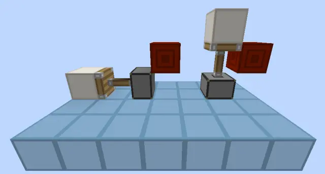
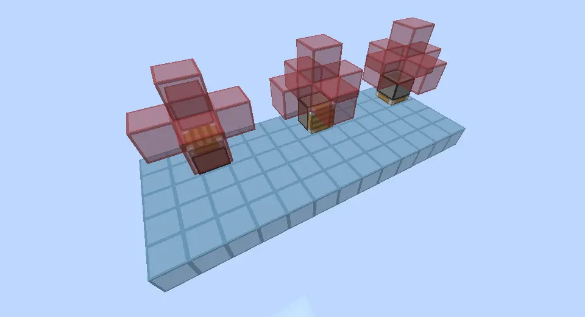
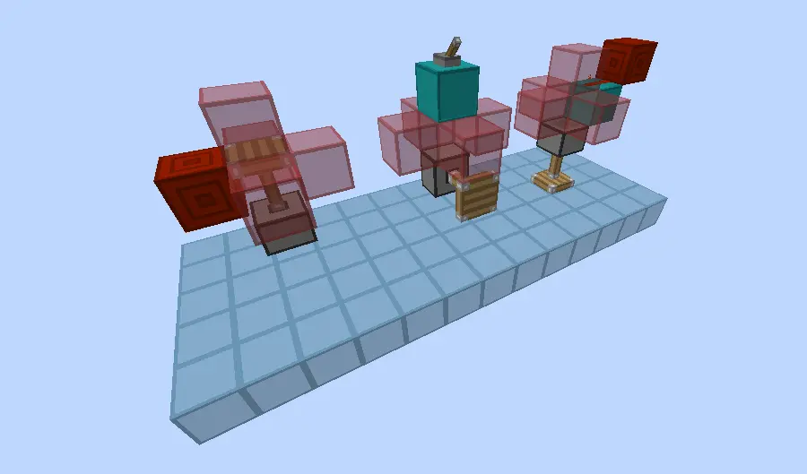
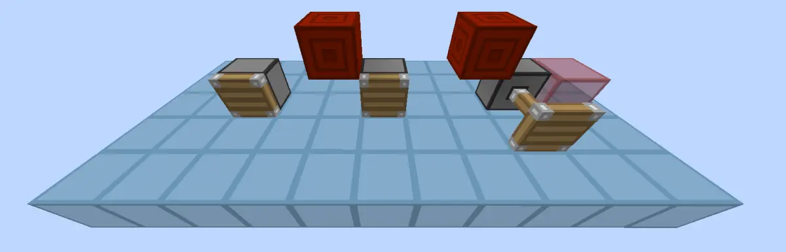
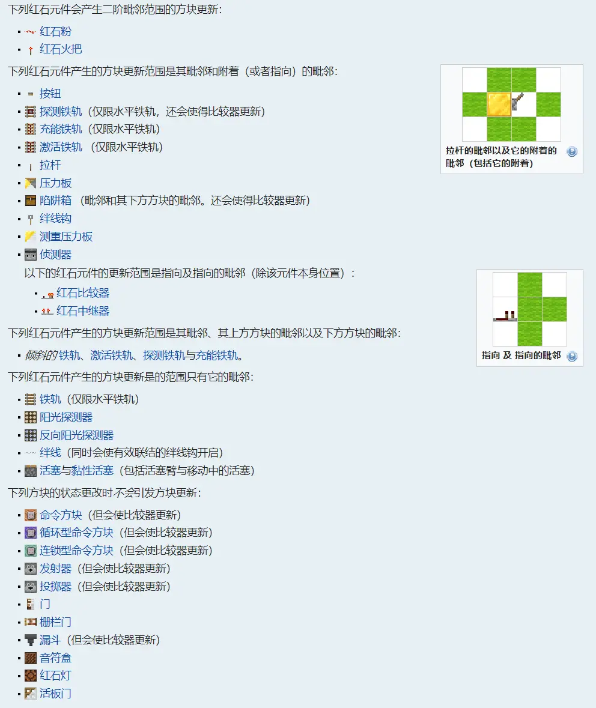
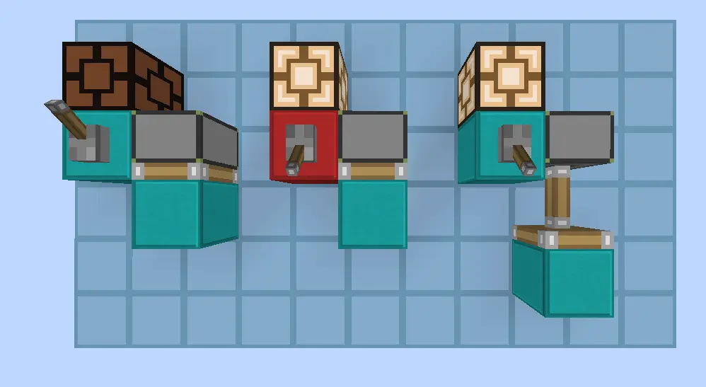
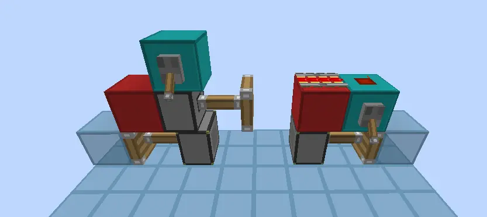

2w关注特辑（然而已经2.1w多了（
愣是鸽了3个星期（
0.引言
在JE的红石电路中，我们经常能看到这样的激活活塞的方法：
事实上，不仅是活塞，像投掷器、发射器也能这样被激活。
这种激活方式历来成为刚学JE红石的玩家的一大困惑：为什么红石块没有直接碰到活塞主体，活塞却能伸出呢？（这里活塞主体不包括活塞伸出的活塞臂）
去问其他玩家，有的人说这种激活方法叫QC，有的人说叫BUD。那这两者又是什么关系呢？
这便是这篇文章所要讲的内容。
1.QC
要说清楚两者的区别，我们还是得先说明清楚何为QC。
QC，全称Quasi-connectivity，是发射器，投掷器和活塞（包括普通活塞和粘性活塞）独有的特性，中文译名“半连接性”。
使用QC的活塞有一个很显著的特点，就是红石信号没有直接接触到活塞，但是活塞却能伸出和收回，就如上图所示。这实际上是当初JE版本的一个bug，不过最后成为了特性得以保留到现在。
我们把红石信号不直接接触活塞，但也能使活塞能够运动的位置称作QC位。只要有红石信号在某个活塞的QC位，不论是强充能还是弱充能，这个活塞就可以伸出。活塞的QC位（红色玻璃）如下图所示：

实际上，投掷器和发射器的QC位也和活塞一样。
不论是面向哪里的活塞，这个活塞所有的QC位位置是固定的，位于这个活塞上面一个方块的上左右前后5个方位的5个方块。在这个位置上只要有红石信号，活塞就会有能力进行运动。

三种不同的激活方法
需要注意的是，从开始到现在，QC是以活塞的一种固有特性进行阐述的，而没有说QC是指某种电路。QC是一种性质，一种不需要直接和活塞接触就能激活活塞的一种特性。这个概念的差别，就是区分QC和BUD的关键点。我们待会再谈论两者的区别。之后，我们先把用上图类似方法控制的活塞称为QC态活塞。
2.方块更新
既然QC这么imba，那当然有特殊条件的限制。
所有的QC，都需要方块更新的帮助。
当你在QC位上激活活塞时，活塞并不会马上伸出，而你必须要在这个活塞旁边放一个方块或者破坏活塞周围的一个方块，这个活塞才会像意识到了“啊？我被激活了？”之后再伸出。关闭电路了活塞没有直接收回，而是需要也像上面一样，也是一样的道理。

从左到右展现了QC态活塞的伸出方式
而我们在活塞旁边放了一个方块或者破坏了一个方块的这个过程，实际上就是等于我们给活塞了一个方块更新。方块更新就像一个提醒，提醒QC态的活塞收缩或者伸出。
为什么需要方块更新？
方块更新（Block Update），是方块状态发生变化时给外界的一个提醒信号。这种信号可以让受到方块更新的方块检查自己是否处于正常的状态，如果不是正常状态，方块就会让自己变成正常的状态，就像QC态的活塞伸出收回。事实上，不仅是活塞，许多常见的现象如浮空沙掉落，仙人掌遇到方块掉落，乃至是直接激活活塞，这些都是通过方块更新这座“桥梁”才能实现。如果你用特殊手段关闭了游戏的方块更新，你就会发现这些现象都无法完成。
这张图介绍了常见的方块更新及其范围：

来源：Minecraft Wiki:红石电路
绝大多数方块更新都是在自己所在方块的位置和上下左右前后这个范围内，下文我们只讨论普遍的方块更新，不考虑特殊的方块更新。
方块更新本质是检查方法方块状态的启动器。以仙人掌为例，当你在仙人掌旁边放置一个实体方块的时候，仙人掌此时其实并不知道它旁边有一个方块。但是这个方块会发出一个方块更新，而仙人掌接收了这个方块更新的信息，开始检查自己的状态，发现自己旁边有方块，意识到自己应该变成掉落物了，于是才会变成掉落物。这个过程是瞬时的，但是是不可被忽略的。
对直接激活的活塞也是一样的道理。

上图中，拉下拉杆，活塞就会伸出。这是因为拉杆拉下时，拉杆会产生方块更新，产生的方块更新（红色羊毛标出）传给了活塞，活塞开始检测自己的状态，发现拉杆是有信号的，而且拉杆所强充能的方块就在自己旁边，于是就更新自己的状态，即伸出。活塞收回也是一样的道理。
在这些实例中，方块更新其实起到了桥梁的作用，把不同方块的不同状态连接到了一起，从而产生各种连锁现象。所以说，方块更新是一种沟通方式，它搭起了各种方块互相联系交流的桥梁，使得不同方块可以一同和谐运作。它是客观无形存在的，而不是一种理想概念或性质。破坏和放置方块便是最简单的实现方块更新的方法之一。
其实，阐述了活塞之所以能被激活的本质后，也就不难理解为什么QC态的活塞必须要方块更新一下才能正常伸出收缩。当你在QC位产生一个红石信号时，这个“产生红石信号”的动作所产生的方块更新的范围不够大，QC态活塞并没有接收到这个动作所产生的方块更新，所以就什么反应都没有。直到你给QC态的活塞一个方块更新后，它才会意识到自己的状态不正确，从而进行伸出/收回。
至此，我们就清楚理解了QC态活塞工作的原理和方块更新的基本概念。那BUD又是什么呢？我们用几个例子来解释。
3.BUD

图中是两种常见的更新QC态活塞的方法。
左边是通过一个活塞（红色）直接被拉杆激活，产生一个因为伸出而产生的方块更新，这个更新被底下的QC态活塞所接收到，检查发现自己能被拉杆激活，于是伸出。
右边也是大同小异，铁轨被激活，这会给底下它所附着的方块一个方块更新，活塞接受到后检查发现能被激活，于是伸出。
这两个例子告诉我们，我们可以通过多个方法来传递方块更新，就像多米诺骨牌一样。我们本来无法让QC态活塞直接伸出，因为拉下拉杆产生的方块更新无法到达活塞。但是只要用别的方块收到更新，并产生新的更新，这样就能最终使QC态活塞收到方块更新，达到目的。需要注意的是，传递方块更新的本质是某一个方块作为方块更新的中转站，它接受了方块更新后又自己产生了一个新的方块更新，这里接收到的和产生的方块更新其实并不是同一个来源，接受到的方块更新一旦被接受就被销毁了，之后产生的方块更新都是接受方块所产生的。不过在这里，我们就当作是方块更新的中转站，也不去考虑更深层次的情况。
所以，按理来说，只要有一个方块不仅能接受方块更新，又能以此产生新的方块更新，这个方块理论来说就可以成为方块更新的中转站。而最终接收方的方块，就被称为这个方块的方块更新感应器，英文简称BUD，全称Block Update Detector。如果是多个方块所组成的连锁方块更新，我们一般不考虑中间状态，把这个更新器整体或者最后一个接受方块更新的方块当作这个整体的BUD。这个装置可以接受外界的方块更新，并经过传递，最终在最后一个方块所表现出来。
需要注意，一般BUD的实现方法是通过让“方块有本不属于此刻它应该有的状态”，并检测其何时发生变化，从而接收到方块更新。如浮空沙，仙人掌旁边放实体方块等反常状态，我们可以通过观察这些方块的状态变化来得知是否有方块更新产生。如果没有这种反常状态，我们就无法知道是否有方块更新产生，这种BUD也就失去了“Detector”（检测）的作用。在上图，QC态的活塞就是它这整个装置的BUD，它接受其他方块所产生的方块更新从而改变自己。
由于其他方块所组成的BUD绝大多数都是一次性的，而处于QC态的活塞可以反复使用，所以现在我们常说这种QC态的活塞就是BUD。但其实，使用QC态活塞制作的BUD只是所有BUD中的冰山一角，只不过在红石圈里更加常用罢了。
4.总结
好，QC和BUD都讲清楚了，来小结吧。
上文已经提到了，方块更新是一种沟通方式，它搭起了各种方块互相联系交流的桥梁，而BUD是体现方块更新的一种装置。QC是一种方块性质，它让活塞和投掷器、发射器有了更大的激活范围。但同时在QC位激活的红石原件必须需要其他方块进行方块更新的传递才能正常使用，而这样所造出来的装置中，QC态的活塞就是一种BUD。
所以很显然，QC和BUD本质其实完全不同，但是由于两者可以通过活塞体现，所以也就会有了QC和BUD的混用，认为QC=BUD。这其实是强加因果而产生的逻辑错误。
这里拓展一下，QC是JE版本特有的，而BUD在BE中也有体现，如更新高频燃烧后熄灭的火把等，这也是BUD的一种。这也印证了BUD本质是一类能检测方块更新的装置的集合，而QC是JE活塞的独有属性。
但是，当误用的次数多了，人们也就普遍接受了这种说法了。在数模械圈，你大可说QC=BUD，反正大家也大都懂得你在说什么。在生电圈，你这样说倒也没什么大问题，不过大部分场合还是说QC好一些，毕竟是理论圈子，用词准确一些（
但是，这并不代表你就不需要了解QC、方块更新和BUD的区别。知道这三者的区别，能帮助你更好的学习和了解Minecraft的红石和理论，同时成为你踏入0t、理论圈等更深层领域的敲门砖。
这篇文章可能涉及的概念比较多，一遍看下来没看懂很正常，多看几遍，细细理解，我相信这篇文章会让你受益匪浅的。
以上。